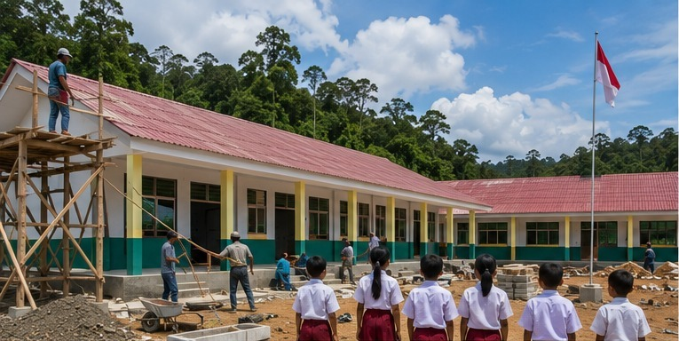
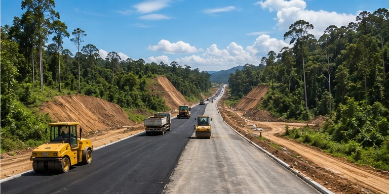
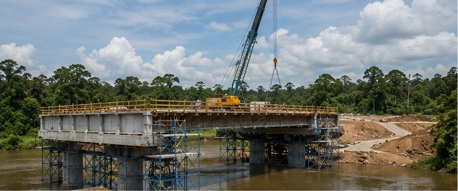
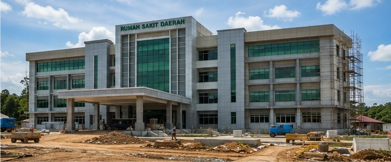
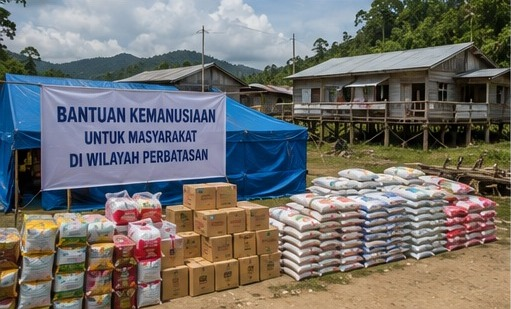
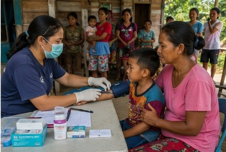
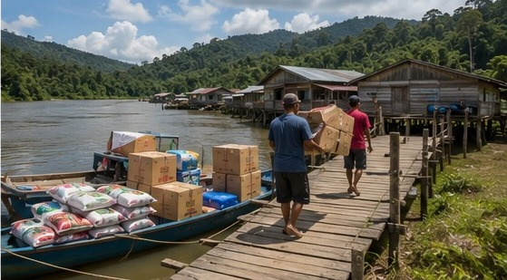

Di atas tanah Benuanta yang megah, mengalir darah dan doa para leluhur yang telah menjaga alam ini dengan ketulusan jiwa. Hari ini, di perbatasan negeri yang berwibawa, kami berdiri untuk meneruskan amanah suci tersebut.
Dengan jiwa yang merdeka dan mandiri, tanpa terikat sekat golongan atau kepentingan pihak mana pun, kami mendedikasikan karya nyata ini murni untuk rakyat Kaltara. Kami bangun sekolah-sekolah sebagai pelita peradaban, kami bentang akses jalan pembuka isolasi, kami dirikan rumah sakit sebagai benteng kemanusiaan, dan kami ulurkan bantuan nyata tanpa pamrih.
Biarlah setiap keringat yang menetes mengalir dalam independensi yang utuh. Menjadikan setiap pembangunan sebagai kerja yang berkah, amanah, dan berdaulat di atas kaki sendiri.
Sedang Berjalan
Dari ruang kelas baru sampai jalur distribusi sungai — ini titik-titik yang sedang dikerjakan tim di lapangan, didanai dari dukungan yang masuk lewat halaman ini.







Dukung Langsung
Pilih salah satu kanal di bawah. Progres pengumpulan dana diperbarui langsung dari server.
menghubungkan ke server